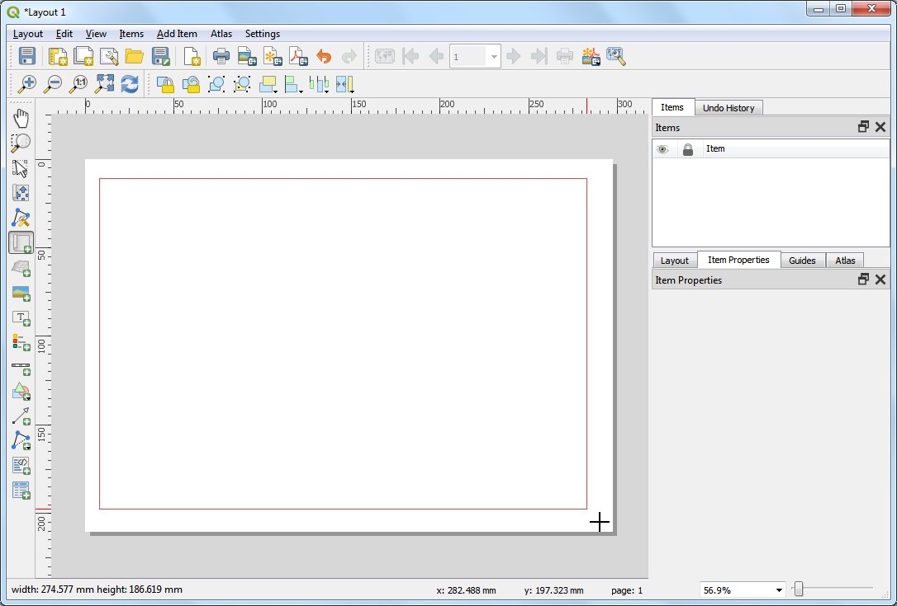

Nächster-Nachbar-Analyse (QGIS3)¶
GIS sind sehr nützlich für die Analyse räumlicher Beziehungen zwischen Objekten. Eine dieser Analysen besteht darin herauszufinden, welche Objekte sich am nächsten zu einem gegebenen Objekt befinden. Es gibt viele Möglichkeiten, diese Analyse in QGIS auszuführen. Man kann eine räumliche Verknüpfung mithilfe des Werkzeugs Attribute nach nächstem verknüpfen ausführen oder die Abstände zu allen Objekten eines anderen Layers mithilfe des Distanzmatrix-Werkzeugs ermitteln. In diesem Tutorial werden wir uns ein Verarbeitungswerkzeug näher anschauen, das sich Abstand zum nächsten Knoten nennt. Dieses Werkzeug ermittelt nicht nur den Abstand zum nächsten Objekt, sondern visualisiert das Ergebnis auch durch eine Linie.
Überblick über die Aufgabe¶
Gegeben seien die Orte aller bekannten Erdbeben zwischen 1900 und 2000. Gesucht ist die jeweils nächstgelegene Siedlung zu all diesen Orten.
Beschaffung der Daten¶
Für dieses Tutorial laden wir einen Datensatz von Erdbeben zwischen 1900 und 2000 herunter. Das National Geophysical Data Center der NOAA pflegt einen großen Datensatz aller bedeutenden Erdbeben seit 2150 v. Chr. auf dem NOAA NCEI Portal. Dort geben wir
1900als Min- und2000als Max-Wert ein. Das Ergebnis besteht aus allen Erdbebenereignissen, die in diesem Zeitraum stattfanden und von der NOAA aufgezeichnet wurden. Für spezielle Fragestellungen können die Parameter variiert werden. Wir betätigen die Schaltfläche Search.

Als Ergebnis werden 2600 Erdbeben-Ereignisse angezeigt. Wir klicken auf das Icon Download TSV File im Spaltenkopf
Year.

Bei Natural Earth findet man einen schönen Datensatz für die Siedlungen: Populated Places. Wir laden folgenden Datensatz herunter: simple (less columns) dataset.
Der Einfachheit halber, können wir eine Kopie beider Datensätze unter folgenden Links herunterladen:
earthquakes_2021_11_25_14_31_59_+0530.tsv
ne_10m_populated_places_simple.zip
Datenquellen: [NCEI] [NATURALEARTH]
Arbeitsablauf¶
Wir suchen die Datei
ne_10m_populated_places_simple.zipim Browser und erweitern sie. Die Dateine_10m_populated_places_simple.shpziehen wir in den Arbeitsbereich.

Der neue Layer
ne_10m_populated_places_simplewird im Layer-Panel angezeigt. Dieser Layer enthält Punkte für die bewohnten Orte. Jetzt werden wir den Erdbebenlayer laden. Dieser Layer liegt als Tab Serepated Values (TSV) Textdatei vor. Um diese Datei zu laden, betätigen wir die Schaltfläche Datenquellenverwaltung öffnen in der Datenquellenverwaltungsleiste. Man kann alternativ die Tastenkombination Strg + L verwenden.

Im Dialogfenster Datenquellenverwaltung wechseln wir in den Bereich Getrennte Texte.

Wir betätigen die Schaltfläche … neben Dateiname und navigieren zur heruntergeladenen Datei
earthquakes-2021-11-25_13-39-30_+0530.tsv. Abhängig vom Betriebssystem wird die Datei in dem Ordner, in den sie heruntergeladen wurde, nicht angezeigt. Wenn dies der Fall sein sollte, wechseln wir im Dialogfenster Zu öffnende getrennte Textdatei wählen zu Alle Dateien (*; .). Nach dem Öffnen wählen wir Benutzerdefiniert im Bereich Dateiformat und wählen die OptionTabulator. Im Abschnitt Geometriedefinition wählen wir Punktkoordinaten. Die Werte im X-Feld und im Y-Feld werden automatisch vorausgefüllt, wenn die Eingabedatei geeignete Felder enthält; in unserem Fall sind diesLongitudeundLatitude. Das Geometrie-KBS können wir bei der VoreinstellungEPSG:4326 - WGS 84belassen. Wenn die Eingabedatei in einem anderen KBS dargestellt sein sollte, kann dieses hier ausgewählt werden. Wir betätigen die Schaltfläche Hinzufügen, anschließend Schließen.

Wir können nun an verschiedenen Stellen hineinzoomen oder die Karte verschieben, um beide Datensätze zu erkunden. Jeder rote Punkt repräsentiert eine Siedlung und jeder grüne Punkt ein Erdbebenereignis bzw. umgekehrt, abhängig von der Reihenfolge des Ladens der Layer. Unser Ziel ist es, den nächstgelegenen Punkt aus dem Siedlungen-Layer zu jedem Punkt im Erdbeben-Layer herauszufinden. Wir sehen uns zunächst die Attributtabelle des Erdbeben-Layers an. Dazu wählen wir den Layer aus und betätigen die Schaltfläche Attributtabelle öffnen in der Werkzeugleiste.

Es gibt
2601Objekte, aber die Daten enthalten einige Einträge ohne Längen- und Breitengradangaben. Diese Daten müssen vor der weiteren Verarbeitung entfernt werden; die Attributtabelle schließen wir.

Wir wählen den Algorithmus und öffnen ihn per Doppelklick.

Im Dialogfenster Leergeometrien entfernen wählen wir
earthquakes-2021-11-25_13-39-30_+0530als Eingabelayer und setzen die Option Auch Leergeometrien entfernen. Wir betätigen die Schaltfläche Starte und nach Abschluss der Verarbeitung Schließen.

Ein neuer Layer
Nicht leere Geometrienwird dem Layer-Panel hinzugefügt. Für unsere Analysen werden wir diesen Layer anstatt des Original-Layers verwenden. Die Sichtbarkeit des Layersearthquakes-2021-11-25_13-39-30_+0530schalten wir im Layer-Panel ab. Wir wählen den LayerNicht leere Geometrienund betätigen die Schaltfläche Attributtabelle öffnen aus der Attributwerkzeugleiste.

Die Anzahl der Objekte hat sich verringert, da die Objekte ohne Längen- oder Breitengradangaben entfernt wurden; die Attributtabelle schließen wir wieder.

Wir können nun die Nächster-Nachbar-Analyse starten. Wir suchen nach dem Werkzeug , welches wir durch Doppelklick öffnen.

Bemerkung
Es ist auch möglich, einen Punktlayer als Ausgabe zu generieren, indem wir das Werkzeug Abstand zum nächsten Knoten (Punkte) verwenden.
Im Dialogfenster Abstand zum nächsten Knoten (Linie zu Knoten) wählen wir
Nicht leere Geometrienals Quellpunktlayer. Wir wählenne_10m_populated_places_simpleals Zielnabenlayer undnameals Nabenlayernamensattribut. Das Werkzeug errechnet den geradlinigen Abstand zwischen einem Erdbebenereignis und der nächstgelegenenen Siedlung. Wir setzenKilometerals Maßeinheit. Wir betätigen die Schaltfläche...neben Knotenabstand und wählen In Datei speichern…, um die Datei alsearthquakes_with_nearest_city.gpkgzu speichern. Anschließend betätigen wir die Schaltfläche Starte und nach Abschluss der Verarbeitung Schließen.

Im Hauptfenster von QGIS wird ein neuer Layer
earthquakes_with_nearest_cityin das Layer-Panel geladen. Dieser Layer enthält Linienobjekte, die jeden Punkt des Erdbeben-Layers mit der jeweils nächstgelegenen Siedlung verbinden. Wir wählen den Layerearthquakes_with_nearest_cityund betätigen die Schaltfläche Attributtabelle öffnen in der Werkzeugleiste.

Wir scrollen ganz nach rechts bis zu den letzten Spalten. Dort wurden 2 neue Attribute, HubName und HubDist zu den Original-Objekten der Erdbeben hinzugefügt. Hier werden der Name der nächstgelegenen Siedlung und der Abstand dazu aufgeführt.

If you want to give feedback or share your experience with this tutorial, please comment below. (requires GitHub account)